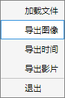
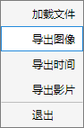

1.1.2 导出图像
 单击文件，选择导出图像，在对话框中选择导出文件夹与文件名，单击保存。支持的导出格式为.tif文件、.mat文件。 注：更改主界面右下角切换浏览源即可更改导出数据源，浏览器的当前颜色通道即为导出颜色通道。

单击文件，选择导出图像，在对话框中选择导出文件夹与文件名，单击保存。支持的导出格式为.tif文件、.mat文件。
注：更改主界面右下角切换浏览源即可更改导出数据源，浏览器的当前颜色通道即为导出颜色通道。